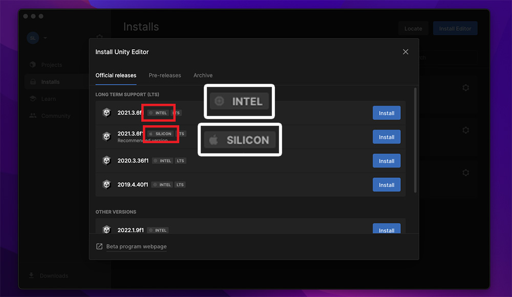
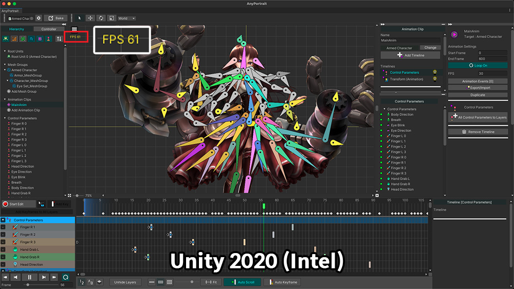
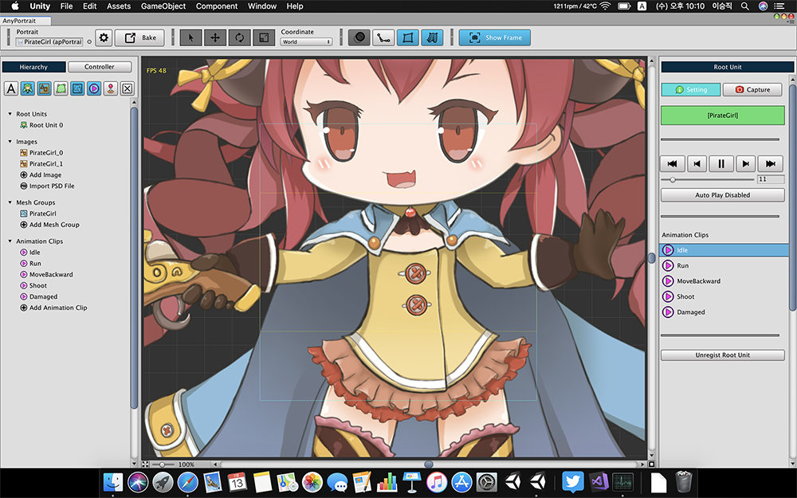
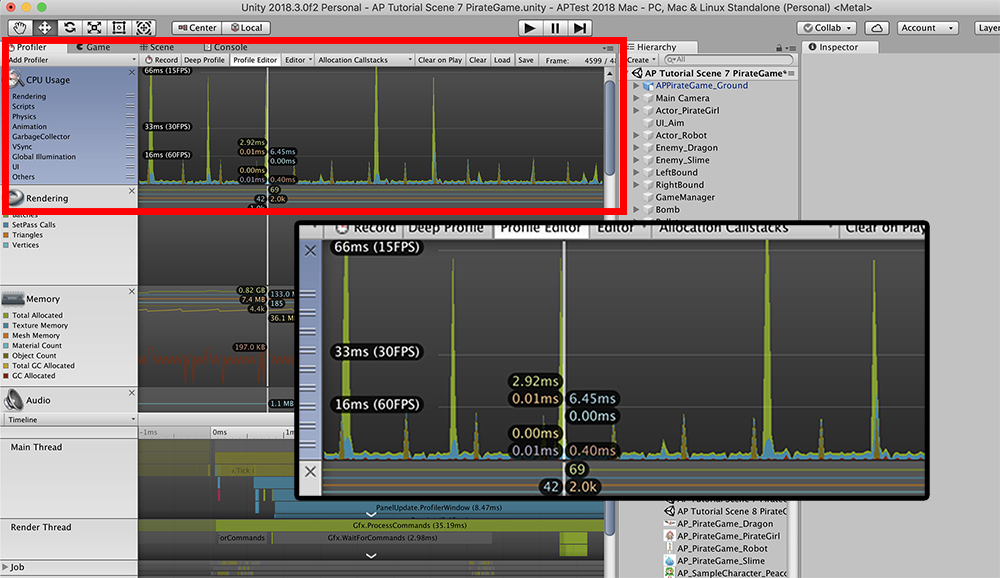

AnyPortrait > Manual > Performance issue on Mac
Performance issue on Mac
1.4.0
Performance differences by version of Unity on Apple Silicon
Following the release of Apple Silicon (M1, M2), there was a performance issue with the Unity engine in the Mac environment.
Also, there have been many changes from the previous and development environment, as the editor's environment is fixed to "Metal".
Fortunately, as Unity strengthened support for Apple Silicon, performance continued to improve, and most performance issues were resolved.
On this page, you can see the test results on a device with Apple M1 installed.

If you want to install the Unity editor in the Mac environment where Apple Silicon is installed, you can see the INTEL version and the SILICON version of the editor as shown above.
The CPU of the device tested is an Apple M1 and supports both versions.
Let's see how AnyPortrait's performance differs depending on the version of the Unity editor.
(All test environments were unified with a common demo character open and the editor maximized.)

This is the result of running in Unity 2020 (Intel) version.
You can see that the FPS of AnyPortrait editor is recorded around 60.

This is the result of running in Unity 2021 (Apple Silicon) version.
The FPS of AnyPortrait editor increased significantly compared to the Intel version, recording 80 or higher.

This is the result of running in Unity 2022 (Apple Silicon) version.
Please note that Unity 2022 is still in beta.
The FPS of AnyPortrait editor is slightly increased compared to the 2021 version and recorded around 90.
In particular, starting with Unity 2022, Unity plugins such as AnyPortrait can be made "full screen" separately, which will improve the editor's performance a bit.
The "Stuttering problem" that occurred when setting "Metal" in Mojave, a previous version of Mac OS, has been confirmed to have been resolved by updating Mac OS and Unity engine.
The workaround described below should work for older development environments.
Stuttering problems and solutions according to Metal settings (old issue)
When running Unity on a Mac device, in the macOS Mojave, AnyPortrait slows down every few seconds.
This phenomenon is called the "Stuttering problem".
The rendering method "Metal" provided by MacOS Mojave and Unity is caused by poor performance in AnyPortrait.
If you re-run Unity on occasion, this problem may be solved, but if not, try using the method described below.

The above image shows the running AnyPortrait editor in Unity 2018 running on macOS Mojave.
At this time, even if the measured FPS value is high, the actual performance of the editor may drop periodically.

The profiler was used to measure the performance of the editor.
You can see that the performance of the editor running above 60 FPS drops to 15 FPS every 2 to 3 seconds.

(1) Open the Player Settings screen. There are two ways to do this.
- Open File > Build Settings from the Unity menu and click the "Player Settings ..." button.
- Open Edit> Project Settings from the Unity menu and select the Player menu.
(2) Turn off Metal Editor Support*.
(3) An information message appears. Click the Apply button.

When the Metal Editor Support setting is turned off, you can see Unity Editor rendering from Metal to OpenGL.

If you run AnyPortrait, you'll see that the performance issue has been resolved.
When you measure AnyPortrait with a profiler, the minimum frame will be improved to 60 FPS.
Performance of AnyPortrait Editor
The RainyRizzle team is constantly working to improve the performance of the AnyPortrait editor.
However, due to factors such as updates of Unity or OS, differences in development environments, sometimes unexpected performance problems are reported.
If you are experiencing performance issues, please feel free to contact us.
- Report Page